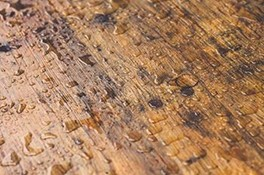
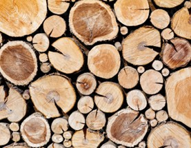

Liquid wood is slowly making it debut across the american market, and may be found in stores near you! This product is available in three different forms. The first, and most popular version is the pour version. It comes in a small jar, allowing you to simply unscrew, and pour it where you need it! This is especially helpful for starting large bonfires or a grill. The second version is the spray style. This style is still popular but not quite as common, as it offers a more controlled spray of the liquid wood, but at a reduced quantity, reducing the wood starter possibly wasted in the process. This version is most popular for small campfires or for quick, small fires whenever needed.


The last variant, and newest version, is the liquid torch. This new version is a new way to have a natural light source when walking. Its long cylindrical shape makes it easy to hold, while keeping your hands away from the fire. The top end has a controlled surface to place the liquid wood inside, letting the torch burn for hours on end. This is most popular for those that want a truly electronic-free camping experience, and also for those wishing to be a part of Indiana Jones movies. Whichever version you pick, Liquid Wood is here to help ease your fire starting and maintaining needs, in whatever the circumstance!